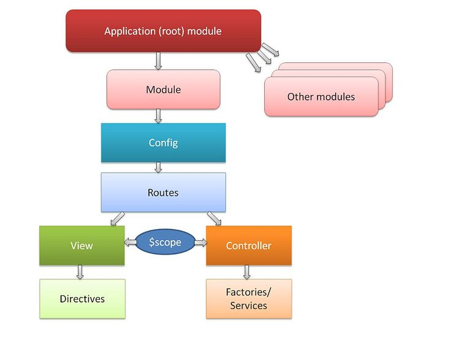
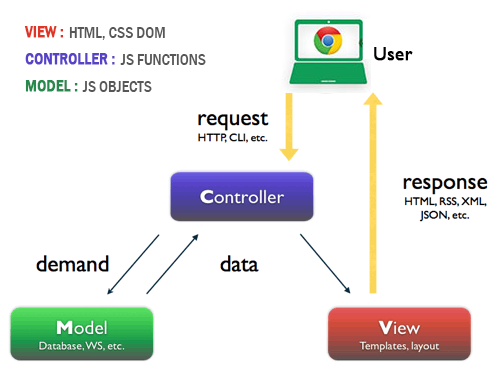
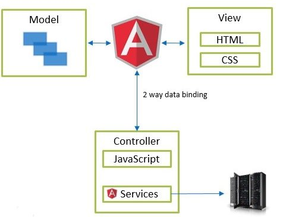

Root Module

Rootscope on Angularjs
Root Scope. All applications have a $rootScope which is the scope created on the HTML element that contains the ng-app directive. The rootScope is available in the entire application. If a variable has the same name
in both the current scope and in the rootScope, the application uses the one in the current scope.
VCM

VCM on Angularjs
Root Scope. All applications have a $rootScope which is the scope created on the HTML element that contains the ng-app directive. The rootScope is available in the entire application. If a variable has the same name
in both the current scope and in the rootScope, the application uses the one in the current scope.
VCM 2.0

VCM 2.0 on Angularjs
Root Scope. All applications have a $rootScope which is the scope created on the HTML element that contains the ng-app directive. The rootScope is available in the entire application. If a variable has the same name
in both the current scope and in the rootScope, the application uses the one in the current scope.